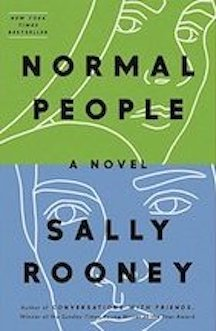

NORMAL PEOPLE
📖📚💌
what I thought:
- ⭐️⭐️⭐️
- In Normal People, Connell and Marianne are schoolmates who pretend not to know each other. He’s popular and well-adjusted, star of the school football team, while she is lonely, proud, and intensely private. But when Connell comes to pick his mother up from her job at Marianne’s house, a strange and indelible connection grows between the two teenagers—one they are determined to conceal.
A year later, they’re both studying at Trinity College in Dublin. Marianne has found her feet in a new social world while Connell hangs at the sidelines, shy and uncertain. Throughout their years at university, Marianne and Connell circle one another, straying toward other people and possibilities but always magnetically, irresistibly drawn back together. And as she veers into self-destruction and he begins to search for meaning elsewhere, each must confront how far they are willing to go to save the other.- summary from "the bibilofile"
- Overall, I thoguht that the story of normal people was very good. I really liked the relationship between Connell and Marriane, and how Rooney chooses to write about many prevelent topics, such as social class. I always found myself picking up this book, and I really enjoyed it. Althoguh many argue it was the "point" of the story, I didnt like how hard it was for Marriane and Connell to communicate. I give normal people a 4 star rating.

home